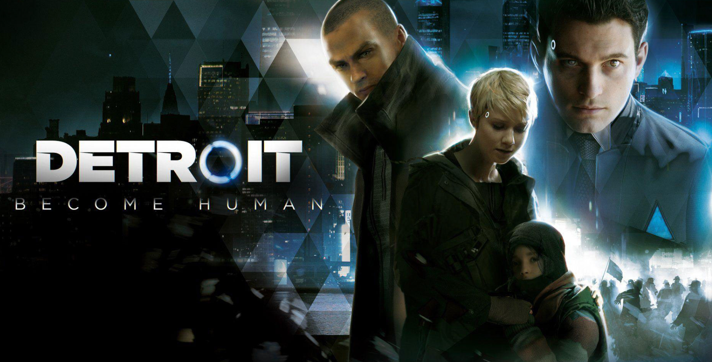

تدور أحداث اللعبة في مدينة ديترويت عام 2038، حيث أصبح البشر يعتمدون على androids شبيهة بالبشر للعمل في مختلف المجالات. لكن بعض هذه الآلات تبدأ في التصرف بشكل غير معتاد وكأنها تمتلك مشاعر ووعيًا خاصًا بها. تلعب بثلاث شخصيات رئيسية، وتعيش قصصهم وقراراتهم المختلفة، حيث يمكن لكل اختيار أن يغير مجرى الأحداث ومصير الشخصيات، بل وقد يؤثر في مستقبل المدينة بأكملها.
آراء ومراجعات اللاعبين